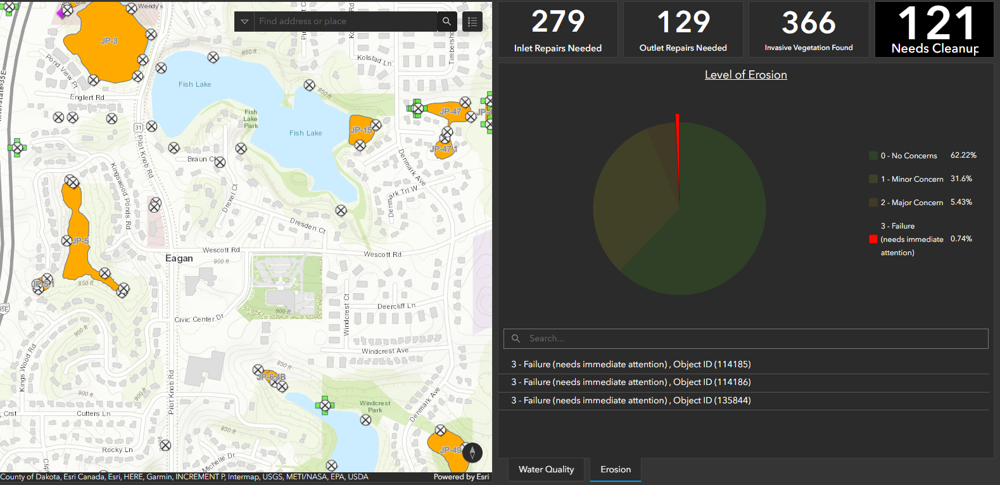

Project overview
What I created
I created this dashboard to present MS4-related information through a GIS interface. The project demonstrates how spatial information and dashboard views can be brought together to help people explore and understand stormwater data.
My role
I built the dashboard myself, from the project setup through the finished display. I was responsible for how the information was organized and presented.
Additional project image
More from this project
This second example provides another look at the completed work.

MS4 Dashboard — additional screenshot